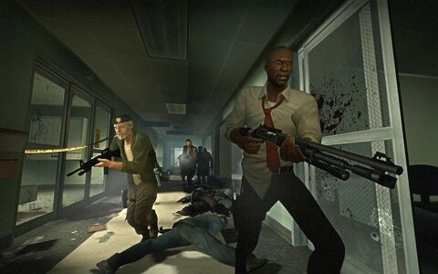
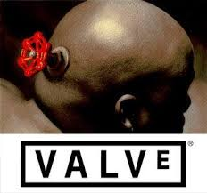

Left 4 Dead es un videojuego de terror de disparos en primera persona desarrollado por Valve South y publicado por Valve. El juego utiliza el motor gráfico de Valve, Source, y está disponible para Microsoft Windows, Xbox 360 y macOS. Fue lanzado originalmente para Microsoft Windows y Xbox 360 en noviembre de 2008 y para Mac OS X en octubre de 2010, y es el primer título de la serie Left 4 Dead.
Ambientado tras un brote de zombis en la costa este de Estados Unidos, el juego enfrenta a sus cuatro protagonistas, apodados los "Supervivientes", contra hordas de infectados.
Left 4 Dead fue desarrollado por Valve Corporation, una de las compañías más influyentes en la industria de los videojuegos. Valve es conocida por su trabajo en varios títulos icónicos, como la Half-Life, Portal y Counter-Strike.
